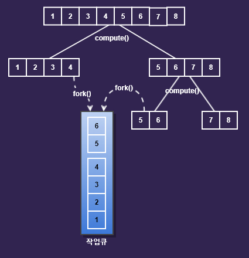

fork&join 프레임워크
JDK 1.7부터 fork&join 프레임워크가 추가되었고, 이 프레임워크는 하나의 작업을 작은 단위로 나눠서 여러 스레드가 동시에 처리하는 것을 쉽게 만들어 줍니다.
RecursiveAction과 RecursiveTask, 두 클래스 중에서 하나를 상속받아 구현해야 합니다.
RecursiveActionn 반환값이 없는 작업을 구현할 때 사용
RecursiveTask 반환값이 있는 작업을 구현할 때 사용
두 클래스 모두 compute()라는 추상 메서드를 가지고 있는데, 이 메서드를 구현하기만 하면 됩니다.
그 다음에는 스레드풀과 수행할 작업을 생성하고, invoke()로 작업을 시작합니다.
스레드를 시작할 때 run()이 아니라 start()을 호출하는 것처럼, fork&join프레임워크로 수행할 작업도 compute()가 아닌 invike()로 시작합니다.
ForkJoinPool은 fork&join프레임워크에서 제공하는 스레드 풀(thread pool)로, 지정된 수를 반복해서 생성하지 않아도 된다는 장점과 너무 많은 스레드가 생성되어 성능이 저하되는 것을 막아준다는 장점이 있습니다.
스레드 풀은 스레드가 수행해야하는 작업이 담긴 큐를 제공하며, 각 스레드는 자신의 작업 큐에 담긴 작업을 순서대로 처리합니다.
compute()의 구현
compute()를 구현할 때는 수행할 작업 외에도 작업을 어떻게 나눌 것인가에 대해서도 알려줘야 합니다.
public Long compute() {
long size = to - from + 1; // from <= i < to
if (size <= 5) { // 더할 숫자가 5개 이하일 경우
return sum(); // 숫자의 합을 반환. sum()은 from부터 to까지의 수를 더해서 반환
}
// 범위를 반으로 나눠서 두 개의 작업을 생성
long half = (from + to) / 2;
SumTask leftSum = new SumTask(from, half);
SumTask rightSum = new SumTask(half + 1, to);
leftSum.fork(); // 작업(leftSum)을 작업 큐에 넣습니다.
return rightSum.compute() + leftSum.join();
}실제 수행할 작업은 sum()뿐이고 나머지는 수행할 작업의 범위를 반으로 나눠서 새로운 작업을 생성해서 실행시키기 위한 것입니다. 작업의 범위를 어떻게 나눌 것인지만 정의해 주면 나머지는 항상 같은 패턴입니다.
1부터 8까지의 숫자를 더하는 과정을 도식화하였습니다. 작업의 size가 2가 될 때까지 나눕니다. compute()가 처음 호출되면 더할 숫자의 범위를 반으로 나누어서 한쪽에는 fork()를 호출해서 작업 큐에 저장합니다. 하나의 스레드는 compute()를 재귀호출하면서 작업을 계속해서 반으로 나누고, 다른 스레드는 fork()에 의해 작업 큐에 추가된 작업을 수행합니다.
다른 스레드의 작업 훔쳐오기
fork()가 호출되어 작업 큐에 추가된 작업 역시, compute()에 의해 더 이상 나눌 수 없을 때까지 반복해서 나뉘고, 자신의 작업 큐가 비어있는 스레드는 다른 스레드의 작업 큐에서 작업을 가져와서 수행합니다.
이것을 작업 훔쳐오기(wirj stealing)라고 하며ㅡ 이 과정은 모두 스레드 풀에 의해 자동적으로 이루어집니다.
이 과정을 통해 한 스레드에 작업이 몰리지 않고ㅡ 여러 스레드가 골고루 작업을 누너어 처리하게 됩니다.
fork()와 join()
fork()는 작업을 스레드의 작업 큐에 넣는 것이고, 작업 큐에 들어간 작업은 더 이상 나눌 수 없을 때까지 나뉩니다. 즉, compute()로 나누고 fork()로 작업 큐에 넣는 작업이 계속해서 반복됩니다.
그리고 나눠진 작업은 각 스레드가 골고루 나눠서 처리하고, 작업의 결과는 join()을 호출해서 얻을 수 있습니다.
fork()와 join()의 중요한 차이점은 fork()는 비동기 메서드(asynchronous method)이고, join()은 동기 메서드(synchronous method)라는 것입니다.
fork() 해당 작업을 스레드 풀의 작업큐에 넣습니다. (비동기 메서드)
join() 해당 작업의 수행이 끝날 때까지 기다렸다가, 수행이 끝나면 그 결과를 반환합니다. (동기 메서드)비동기 메서드는 일반적인 메서드와 달리 메서드를 호출만 할 뿐, 그 결과를 기다리지 않습니다.